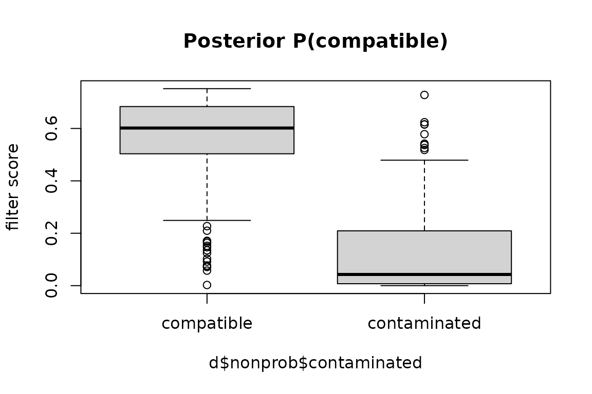

Logistic regression with Pólya–Gamma augmentation
Source:vignettes/logistic-model.Rmd
logistic-model.RmdModel and algorithm
The target model is
.
For contaminated units, M0/Mjoint use a
Bernoulli()
density with
,
and M1 a rival logistic regression.
The coefficient update uses Pólya–Gamma data augmentation (Polson,
Scott and Windle, 2013): conditional on
,
the posterior of
is Gaussian with covariance
and mean
.
As in the original implementation,
variables are drawn from the first
terms (mixture_control(pg_terms = 128)) of their
sum-of-gammas representation plus a correction for the mean of the
omitted tail — an accurate approximation rather than an exact draw.
Binary outcomes carry little information per unit, so a contaminating
mechanism must differ substantially (e.g. sign-flipped effects) to bias
a logistic fit, and identifying individual contaminated units relies
heavily on the covariate term of Mjoint.
Example: sign-flipping contamination
beta <- c(0.2, 1, -0.8)
d <- simulate_mixture_data("binomial", n_prob = 400, n_nonprob = 400,
contamination = 0.3, beta = beta, x_shift = 2,
seed = 201)
head(d$nonprob)
#> y x1 x2 contaminated
#> 1 0 2.8067144 1.0560083 1
#> 2 0 -1.1742917 0.2706309 0
#> 3 1 0.7454518 -0.6571806 0
#> 4 0 2.2295758 1.9585892 1
#> 5 1 0.4082529 -0.1934783 0
#> 6 0 -0.7303275 -0.3577141 0Contaminated units have covariates shifted by +2 and slopes of opposite sign.
fit <- mixture_fit(y ~ x1 + x2, d$prob, d$nonprob, family = "binomial",
n_iter = 1500, burnin = 500, seed = 1)
pooled <- baseline_fit(y ~ x1 + x2, rbind(d$prob, d$nonprob[names(d$prob)]),
family = "binomial", n_iter = 1500, burnin = 500, seed = 1)
prob_only <- baseline_fit(y ~ x1 + x2, d$prob, family = "binomial",
n_iter = 1500, burnin = 500, seed = 1)
rbind(truth = beta, prob_only = coef(prob_only), naive_pooled = coef(pooled),
mixture = coef(fit))
#> (Intercept) x1 x2
#> truth 0.2000000 1.0000000 -0.8000000
#> prob_only 0.3608662 1.0401683 -0.7043355
#> naive_pooled 0.1946997 0.4646196 -0.5802525
#> mixture 0.4092303 1.1871558 -0.7724388
summary(fit)
#> Bayesian contamination-mixture fit (bayesSampleMix)
#> Call: mixture_fit(formula = y ~ x1 + x2, prob_data = d$prob, nonprob_data = d$nonprob,
#> family = "binomial", n_iter = 1500, burnin = 500, seed = 1)
#> Family: Binomial (logit link)
#> Model: Mjoint (contaminating density + covariate leverage term)
#> Leverage covariates: x1, x2 (inflation c = 2.5)
#> Samples: n_P = 400, n_NP = 400
#> MCMC: 1500 iterations, burn-in 500, thin 1 -> 1000 draws
#>
#> Target-model coefficients (posterior; 95% credible intervals):
#> mean sd 2.5% 50% 97.5% ess mcse
#> (Intercept) 0.409 0.110 0.202 0.408 0.627 436 0.00526
#> x1 1.190 0.137 0.941 1.180 1.460 244 0.00875
#> x2 -0.772 0.123 -1.020 -0.767 -0.529 261 0.00761
#>
#> Contamination:
#> mean sd 2.5% 50% 97.5% ess mcse
#> contamination 0.564 0.0468 0.473 0.564 0.656 123 0.00423
#> contamination_realized 0.565 0.0411 0.478 0.565 0.643 118 0.00378
#>
#> Filter scores of NP units (s_j = posterior P(compatible)):
#> expected compatible units: 173.9 of 400; units with s_j < 0.5: 179; mean entropy: 0.521The coefficient estimates are close to the truth, whereas naive
pooling attenuates both slopes. Note, however, that the contamination
fraction is over-estimated (true value 0.3). Binary
outcomes say little about individual units, and the covariate-free
contaminating density
Bernoulli()
is itself a plausible description of many compatible units, so units
that fit both components about equally well are partly allocated to the
contaminating one; the Mjoint covariate term additionally
assigns compatible NP units in the tails of the P covariate distribution
to it. In 50 simulated data sets of this design the posterior mean of
ranged from 0.50 to 0.70, while the coefficient z-scores were consistent
with standard normal variation (see
inst/validation/calibrate_tolerances.R). The error is
conservative — fewer NP units are pooled, so the posterior is wider than
an oracle fit would be — but
should be read as the weight of a “background” component rather than as
the share of units generated by a different mechanism. Check also its
effective sample size, which is lower than for the coefficients.
s <- filter_scores(fit)
filter_auc(1 - d$nonprob$contaminated, s)
#> [1] 0.9371429
boxplot(s ~ d$nonprob$contaminated, names = c("compatible", "contaminated"),
ylab = "filter score", main = "Posterior P(compatible)")
Predictions
predict() returns posterior summaries of the
target-population success probability:
nd <- data.frame(x1 = c(-1, 0, 1), x2 = 0)
predict(fit, nd)
#> fit lwr upr
#> 1 0.3158785 0.2495125 0.3872048
#> 2 0.6006121 0.5502591 0.6517365
#> 3 0.8299665 0.7783965 0.8767027